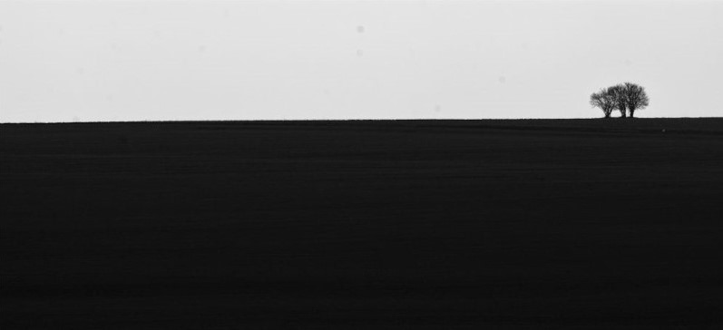

Dormir
não
dá EXP
Início
Porquê
Anotações de um noob

Creator: Martin Vorel - From: libreshot.com
Tudo que ouvimos é uma opinião, não um fato.
Tudo que vemos é uma perspectiva, não a verdade.
AURELIUS, Marco. Meditações